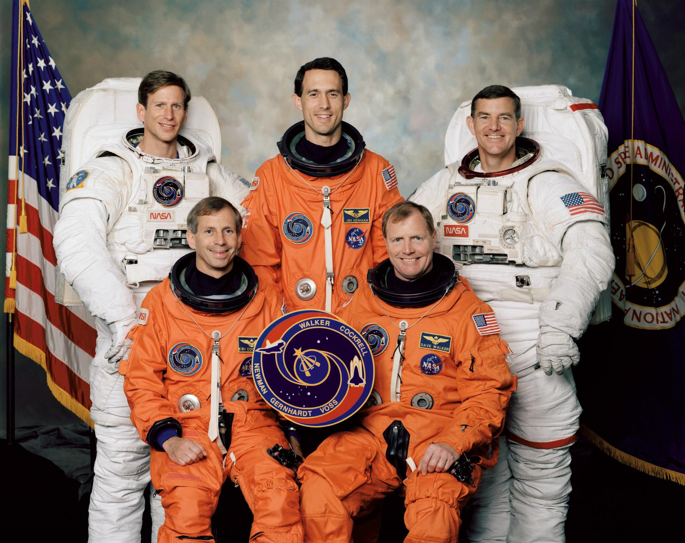
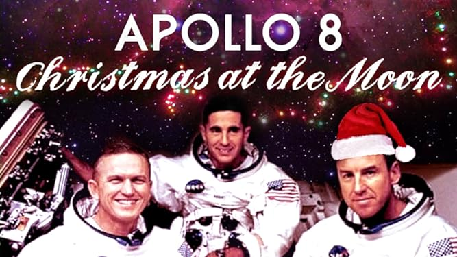
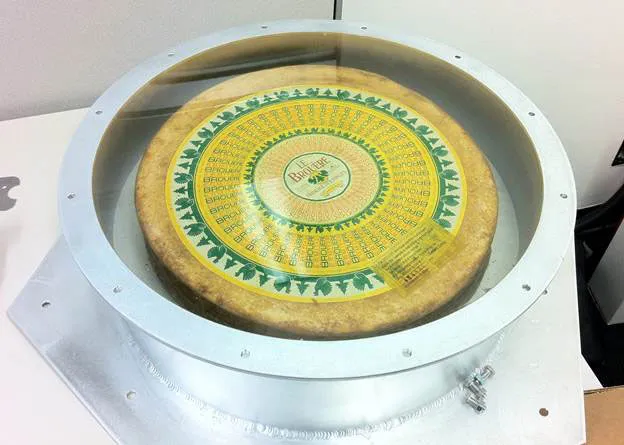

Below are three funny anecdotes from various astronauts.
You may optionally click on each image for some funky effects.
The Dog Crew
Walker, the astronaut commander, decided to go even farther with the dog theme on his next mission because he had such success with it on his previous mission. On his next mission, he gave the astronauts the nickname "Dog Crew 2." He assigned a dog callsign or nickname to each member of the crew, choosing Red Dog for himself. His fellow crew members got to know one another through Pluto, Cujo, Dogface, and Underdog. They wore dog patches on their space suits as a way to honor the dog theme. They all had breakfast in dog bowls prior to takeoff, and during their mission, they woke up to dog-themed music.
Apollo 8 Drunk in Space
Apollo 8's crew celebrated Christmas in orbit. Three tiny bottles of brandy were included with their dinners by mission control as a token of appreciation for their sacrifice for the welfare of humanity. As a result, things in space became somewhat raucous. The son of one of the ground controllers asked if they were all drinking and who was really operating the capsule. "It seems like Isaac Newton is driving most of the time now," said astronaut Anderer. They then continued reading passages from the Bible while in lunar orbit. Upon discovering a Bible in his hotel room, a Japanese correspondent made light of NASA's apparent efficiency in placing a mission transcript there.
Cheesy Humor
A test capsule from Space X was launched in 2010 with an extremely unusual payload: a whole wheel of cheese. Elon Musk said on Twitter that he was inspired by a Monty Python sketch and that it was the craziest idea he could come up with. As far as space jokes go, we think it’s a gouda one.